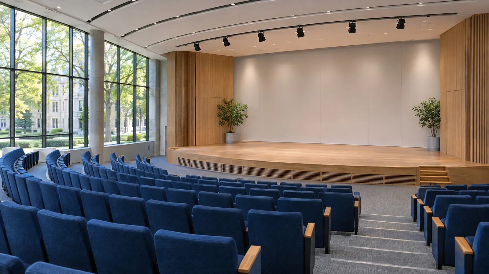
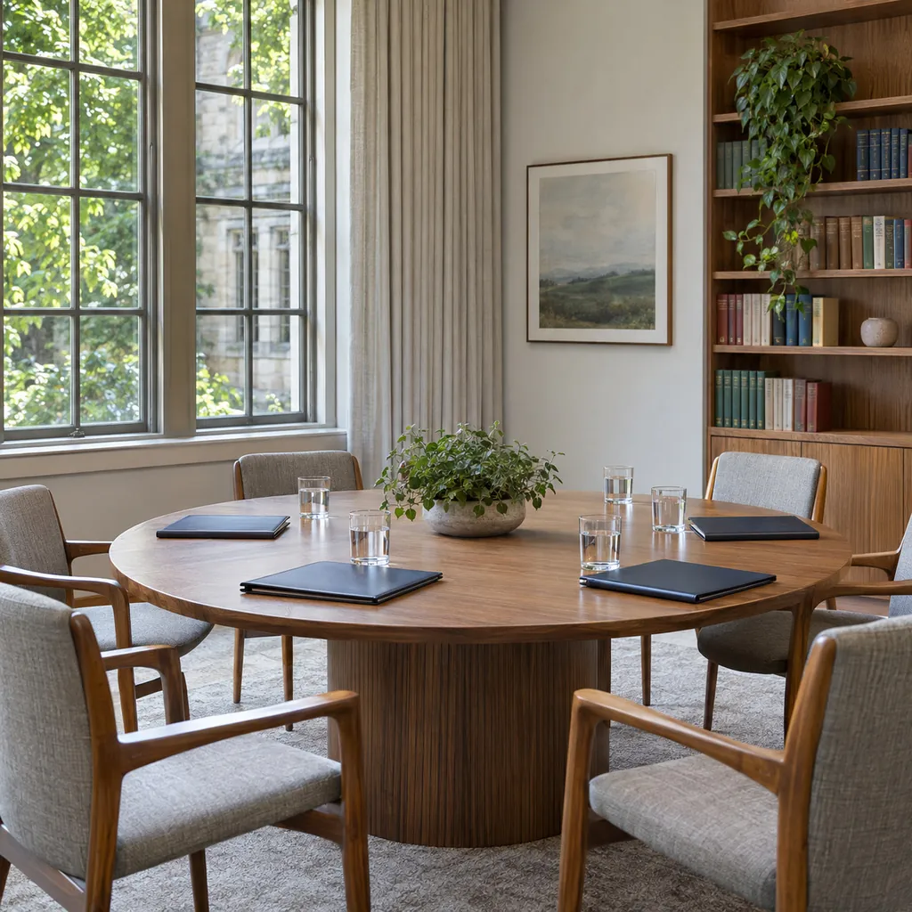

Institución internacional · Base en La Florida, EE. UU.
Capacitación en salud mental y prevención del suicidio
Cursos, talleres y congresos presenciales y virtuales para profesionales, universidades y comunidades, con capítulos en diez países.
- Presencial y virtual
- 10 capítulos
- Universidades y organismos públicos

Capacitaciones destacadas
Ver todos los cursos
- 10capítulos
- 2modalidades
- EE. UU.base en La Florida
Una red internacional que forma, asesora y acompaña
La Red Mundial de Salud Mental y Suicidio es una institución internacional con base en La Florida, Estados Unidos, integrada por profesionales de distintos países.
Formamos profesionales en diferentes áreas de la salud mental y trabajamos por el bienestar integral de las personas, en modalidad presencial y virtual.
Nuestro trabajo
01Capacitaciones, charlas, talleres y congresos
Formación presencial y virtual para profesionales de distintas áreas de la salud mental, equipos de trabajo y comunidad.
02Trabajo con universidades
Actividades y programas junto a casas de estudio, para estudiantes, docentes y equipos de bienestar.
03Asesoría en políticas públicas
Acompañamos a organismos en el diseño de acciones de salud mental y prevención del suicidio.
04Asistencia en vulnerabilidad y catástrofes naturales
Asistimos a personas y comunidades que atraviesan situaciones de vulnerabilidad, emergencias y catástrofes naturales.
05Concientización y psicoeducación
Acciones orientadas al bienestar integral: hablar de salud mental con claridad, reconocer señales y saber dónde pedir ayuda.
Capítulos en diez países
Cada capítulo lleva la formación y el acompañamiento de la Red a su comunidad. Elegí el de tu país para escribirle.
- ARArgentina
- COColombia
- MXMéxico
- CLChile
- UYUruguay
- PYParaguay
- AWAruba
- ECEcuador
- ESEspaña
- USEstados UnidosSede
Escribile al capítulo de tu país
Te ponemos en contacto con los profesionales del capítulo para capacitaciones, charlas y actividades.
Todos los cursos
Elegí por área, modalidad o nivel. Cada curso se agrega una sola vez al carrito.
Próximos eventos
-
14nov 2026
Salud mental en contextos de emergencia
Jornada abierta para equipos de salud, educación y protección civil.
En línea, por videollamada -
28nov 2026
Taller de primeros auxilios psicológicos
Práctica en grupos reducidos, con casos y simulaciones.
Capítulo Argentina -
10dic 2026
Hablar de suicidio sin tabúes
Charla de psicoeducación para familias, docentes y referentes comunitarios.
En línea, por videollamada -
Marzo2027
Congreso Internacional de Salud Mental y Suicidio
Paneles de especialistas, presentación de trabajos y encuentro de los capítulos.
Presencial con transmisión en vivo · sede a confirmar
Biblioteca de la Red
Guías, artículos y trabajos presentados en nuestras actividades, para profesionales y comunidad.
-
Primeros auxilios psicológicos para equipos comunitarios
-
Cómo hablar de suicidio con adolescentes: material para docentes
-
Salud mental después de un desastre natural: las primeras semanas
-
Comunicación responsable del suicidio en medios y redes
-
Programas de bienestar en universidades: una experiencia en red
-
El cuidado de quienes cuidan
Autoridades de la Red
La conducción institucional y las áreas que sostienen el trabajo de los capítulos.
- 01
Presidencia
Conduce la Red y la representa ante universidades, organismos y gobiernos.
- 02
Dirección académica
Define los programas de formación y acompaña a los equipos docentes.
- 03
Coordinación de capítulos
Articula el trabajo de los capítulos de los diez países.
- 04
Comité científico
Revisa contenidos, trabajos presentados y materiales de la biblioteca.
- 05
Área de emergencias
Coordina la asistencia ante catástrofes naturales y situaciones de vulnerabilidad.
- 06
Secretaría institucional
Responde consultas e inscripciones de cada actividad.
Galería de actividades
Hacenos tu consulta
Contanos qué formación buscás o qué necesita tu institución, universidad u organismo. Te respondemos por WhatsApp o por mail.